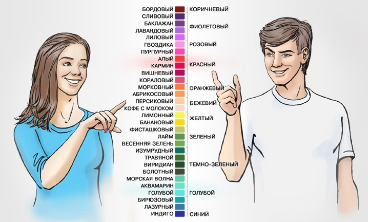

Про женскую красоту и дорогую древесину

Моя жена периодически смотрит различные видео, посвящённые маникюру, косметике и прочему девочковому стаффу. Особо не прислушиваюсь, но так или иначе всё это приходится слышать. Иногда это провоцирует появление различных сугубо мужских мыслей на эту тему, которые я и выложу тут. Скажу сразу - да, наверное я чего-то не понимаю (и не против, чтобы мне что-то объяснили), но большинство подобных описанным ниже ситуаций происходит по той причине, что женщинам просто хочется почувствовать себя особенными. Так же я прекрасно понимаю, что мы симметрично можем глупо выглядеть в глазах женщин со своими увлечениями электроникой, машинами и компьютерными играми.
Про апельсиновые палочки
Долго мучал вопрос - какая религия предписывает женщинам пользоваться для убирания кутикулы исключительно апельсиновыми палочками? Почему не дубовыми, буковыми, берёзовыми, еловыми или, скажем, палочками из бамбука? Залез в гугл, нашёл ровно два довода:
- древесина апельсинового дерева имеет мягкую, но при этом плотную текстуру, не склонную к расслаиванию и не способную повредить ногти и кожу вокруг них
- апельсиновая древесина обладает антисептическими свойствами, что имеет значение при проведении маникюра
Ок. Предположим, это так. Тогда возникают следующие вопросы:
- Сможете ли вы отличить древесину апельсинового дерева от древесины любого другого дерева, обладающего сходной плотностью, структурой и цветом?
- Неужели нельзя пропитать составом, обладающим антисептическими свойствами любую другую, более дешёвую древесину?
- Почему не пользоваться какой-нибудь пластиковой палочкой, обладающей нужной плотностью и которая не будет требовать постоянной замены?
А теперь самое интересное. Это вилка цен. На озоне можно купить 10 этих несчастных палочек за 35 рублей, а можно 5 за 268 (и это ещё со скидкой). Самое интересное начинается, если заглянуть в описание и комментарии. Очевидно, описание уже изменили. Раньше там упоминались "апельсиновые палочки", теперь же в названии написано, что это "палочки для маникюра" и в описании указано, что сделаны они из берёзы. В числе прочего в комментариях к товару обнаружил это:
На самом деле палочки из березового дерева, а не из апельсинового, как указано в описании на странице. Очень расстроилась(((
Объясните мне кто-нибудь, как 5 палочек из куска берёзы могут стоить дороже 5ти микроконтроллеров, если замену подобным палочкам можно при желании и необходимом радиусе кривизны рук сделать самому, а вот для того, чтобы спроектировать и произвести микроконтроллер, нужны годы работы инженеров и сложные производственные линии? Берёзовый брус из которого можно сделать несколько тысяч этих палочек, будет стоить примерно столько же, сколько стоит 5 палочек. Разница в цене с лихвой должна покрыть стоимость не самого сложного технического процесса преобразования бруса в палочки. Отличный способ продавать древесину, не правда ли? Мне кажется, красная цена за все эти "апельсиновые" палочки должна быть на уровне 10 рублей за 1000 штук. Разве это не очевидно, что не имея микроскопа и соответствующих знаний, вы не отличите кусок апельсиновой древесины от другой, а значит, вам можно будет легко продать ту самую берёзу под видом чего угодно иного, лишь бы подороже?
Про фрезы для маникюра
Давным-давно в одной далёкой-далёкой галактике жили-были промышленные фрезы для обработки "мягких" материалов со стандартным хвостовиком 3.175мм. Под "мягкими" материалами я понимаю дерево, пластик, пластмассу и прочее, что существенно мягче, нежели металл. Подобные фрезы бывают керамические, карбидные или твердосплавные. Так вот, допустим, подобная фреза в розницу стоит X рублей. Закупаем в китае их оптом с завода, в результате чего цена уменьшается ещё в несколько раз. Привозим в магазин розничных продаж, увеличиваем розничную стоимость в несколько раз и продаём как "специальную фрезу для аппаратного маникюра". Это же для вашей красоты, женщины! А на красоте экономить нельзя!
Ещё один забавный момент. В маникюре используются не только фрезы, но и например, шарошки, боры, шарошки-фрезы, боры-фрезы, а так же силиконовые полировальные головки. Для большинства женщин это всё - фреза. Услышал как-то словосочетание "силиконовая фреза". Долго ржал. Это звучит примерно так же, как "ватный молоток" или "поролоновый нож". Как подсказывает толковый словарь Ефремова, фреза это многолезвийный РЕЖУЩИЙ инструмент с вращательным движением для обработки металлов, древесины и других твердых материалов.
За какую же сумму можно купить керамическую фрезу на али и продать в РФ? Разница может легко достигать десятикратной. Вот, например фреза за 990 рублей. А вот она же на али примерно за сотню. Вариантов подобных масса.
Лаки для ногтей
До того, как я женился, я не задумывался над этим вопросом. Жена делает себе маникюр сама, но мне стало интересно, а сколько же мы экономим на этом? Как водится, я спросил у гугла, сколько стоит для женщины поход в маникюрный салон. В среднем это примерно от 1000 до 2000 рублей. По отзывам держится это всё три, максимум 4 недели. Возьмём худший вариант - 3 недели и 2000 рублей. Позовём в гости калькулятор:
365/7/3*2000 = 34761.90
Почти 35 тысяч рублей в год. Это один маникюр. Я уже не говорю о различных кремах, шампунях (см. картинку в начале поста), масках и всём прочем. Девушки, скажите честно - это действительно того стОит? Я могу понять, если вы зарабатываете в месяц по 100 тысяч и треть зарплаты раз в год для вас не является существенной суммой. Но если ваш средний оклад составляет, скажем, те же 35 тысяч рублей в месяц, вы действительно готовы тратить месяц своей работы на то, чтобы у вас были красивые ногти? Как вообще работает система ценностей у вас в голове? На одной чаше весов, скажем, возможность не работать целый месяц в году, на другой - тяжкая необходимость самой красить ногти. Конечно, в салоне получится аккуратнее и симпатичнее, но неужели разница в цене не стОит того, чтобы самой научиться делать это? Конечно, тогда потребуется покупать все эти лаки, базы и прочее самой, но подозреваю, что и в этом случае вы существенно сэкономите, особенно, если учесть, что интернет даёт возможность найти что угодно с хорошим соотношением цены к качеству.
Кстати, вы действительно различаете такое количество цветов? Представьте, сколько стоит для завода выпустить какой-нибудь лак чуть иного оттенка? Для этого достаточно изменить пропорцию лишь одного пигмента по отношению к остальным и напечатать новую этикетку. Посчитайте, сколько у вас красных лаков различных оттенков стоит на полках? Возьмите два самых близких из них и устройте кому-нибудь слепой тест. То есть, насколько реально не глядя на этикетки и не видя два цвета рядом, спустя неделю после последнего взгляда на банки с лаком, определить, какой из них является каким? Для меня это скорее всего нереально. Но куда уж мне, я ж мужчина. :)

А сколько этих лаков у вас высыхает? А сколько оттенков "перестанут быть модными в следующем сезоне"? Интереса ради, сосчитайте свои баночки, прикиньте их среднюю стоимость и перемножьте одно на другое. Меня поражает то, насколько глубоко развили эту тему. Сколько бьютиблоггерш на серьёзных щах рассказывает, как правильно приклеить стразик к ногтевой пластине, какая плотность и фактура должна быть у "базы" и тому подобное. Причём видео о правильном приклеивании стразика легко может превышать получасовой хронометраж. Почему же это стало таким важным в наше время и почему в этой области крутятся огромные деньги? Кто и как смог убедить женщин, что их привлекательность зависит от того, соответствует ли цвет их ногтей модным трендам или нет?
Про красоту в целом
За всех мужчин сказать не могу, но подозреваю, что многие со мною согласятся. Женщины, мы вас любим, вы нам нравитесь и это крайне слабо зависит от цвета ваших ногтей. Нам нравится, когда вы следите за собой, когда вы выглядите ухоженно. Если процесс ухода за собой приносит вам положительные эмоции и поднимает настроение - наздоровье! Мы накупим вам миллион лаков для ногтей, кремов, платьев и поддержим вас во всём - лишь бы вы были счастливы, но не давайте индустрии красоты делать из вас одинаковых силиконовых зомби и пудрить вам мозги.
По моему мнению, у женщины есть два типа красоты. Первый - это то, что ей дано от природы - черты лица, волосы, телосложение и тому подобное. Второй - это то, как она способна изменить свою внешность различными средствами - с помощью тренировок, косметики, операций и всего прочего, приумножив, или наоборот, испортив ту первую, естественную свою красоту. Проблема в том, что индустрии красоты постоянно нужны деньги, поэтому она будет рада убедить вас в том, что вы не соответствуете неким идеальным меркам, фактура вашей тоналки не так уж бархатиста, а оттенок помады на три тона светлее, чем нужно. Всё это полный бред! Если вы не способны любить себя и то, как вы вглядите без определённого набора баночек в вашем шкафу, то это серьёзный повод задуматься - может быть что-то пошло не так? Может быть образ идеала в вашей голове сформирован не вами? Запомните, когда вас любят, то сонная и ненакрашенная по утру вы будете милее и прекраснее всех на свете как для вас самой, так и для того, кто будет с вами рядом. Выкиньте мусор из своей головы, любите себя и не ведитесь на "тренды".
Теги: мысли-вслух